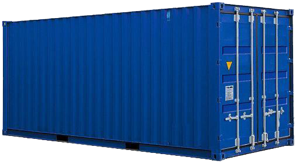
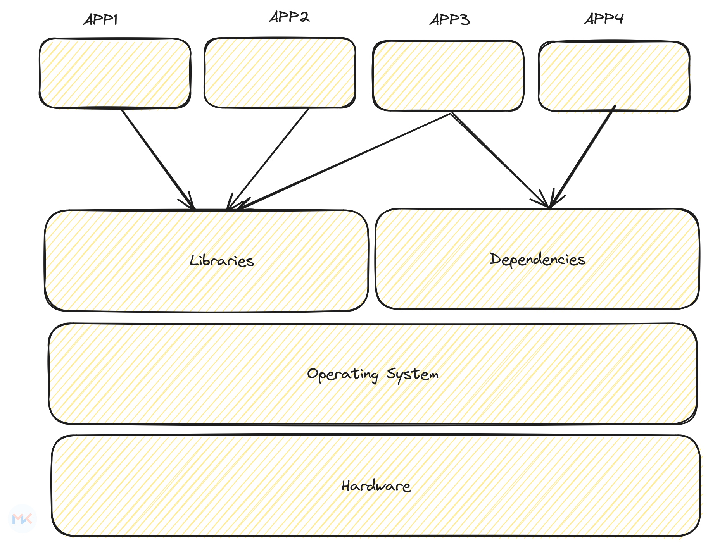

class: center, middle <!--  --> .center[ <img src="../assets/images/01-primary-blue-docker-logo.png" width=50% class="animate__animated animate__fadeIn"/> ] <h1 class="animate__animated animate__fadeIn"> Complete Docker Hands-on</h1> .right[ <img src="../assets/images/mk-logo.png" width=10% /> ] By - Mohit Kumar [mohitkr.com](https://mohitkr.com) --- ## Agenda -- - Why we use Docker -- - Understanding containers, images, Dockerfiles, tags and registeries -- - Configuring, running, listing and inspecting Docker containers -- - Check the logs for a docker container -- - Docker container networking -- - Docker container storage -- - Environment variables -- - Building pushing Docker images -- - Docker image examples -- - Working with Docker compose -- - Side car containers -- - Kubernetes -- --- # Pre-requisite - docker - docker-compose - git --- # Transporting goods before shipping containers .right-column[ ] .left-column[ - Manual sorting of most shipments - Dock front warehouses - Thousands of dock workers - handle - congestion in ports - Delays in shipping time, - losses from damage and theft ] --- # A Shipping container .center[  ] -- What problems does a shipping container solve? - *Standardization* - *Isolation* - *Abstraction* --- # Containers: Key Concepts - **Lightweight Instances:** Containers are lightweight and efficient, utilizing the host OS kernel and sharing resources to run multiple isolated instances. - **Encapsulation:** Containers encapsulate applications and their dependencies, ensuring consistency and portability. - **Isolation:** Containers provide process isolation, preventing conflicts between applications running on the same system. - **Standalone Executables:** Containers are standalone executable packages containing everything needed to run a piece of software. - **Scalability:** Containers enable easy scaling of applications by running multiple instances in a consistent environment. --- # Are containers Virtual Machines? -- ## No --- # Containers and Virtual Machines Virtualization Level: - *Containers* : Virtualize only the operating system (OS) level, sharing the kernel with other containers on the same system. - *VMs* : Virtualize the entire hardware, including CPU, memory, storage, and network, creating a complete virtual machine on top of the physical hardware. --- # Containers and Virtual Machines Size and Resource Usage: - *Containers* : Are lightweight and fast to start, taking up only megabytes of space. This allows more containers to run on the same hardware compared to VMs. - *VMs* : Are heavier and slower to start, requiring gigabytes of space. This limits the number of VMs that can run on the same hardware. --- # Containers and Virtual Machines Isolation: - *Containers* : Share the host OS kernel, but have their own isolated file system, processes, and resources. This provides a good level of isolation, but security boundaries are not airtight. - *VMs* : Have their own complete virtual hardware, providing stronger isolation and greater security guarantees compared to containers --- # Containers and Virtual Machines Portability: - *Containers* : are highly portable. They run consistently on any system with the container runtime installed, regardless of the underlying OS. - *VMs* : are less portable. While portable across similar hardware, differences in hardware configuration can cause compatibility issues. --- # Containers and Virtual Machines Use Cases: - *Containers* : Ideal for microservices architecture, web applications, and other software requiring portability, efficiency, and scalability. - *VMs* : Suitable for legacy applications, software requiring direct hardware access, and situations where strong isolation and security are paramount. --- # Will Containers replace Virtual Machines? -- ## No -- ### Not everywhere --- # What is Docker? .right[ <img src="../assets/images/01-primary-blue-docker-logo.png" width=50% class="animate__animated animate__fadeIn"/> ] .left[ - Docker is an open-source platform for automating, deploying, and managing applications inside containers. - Containers allow bundling applications and their dependencies into a single package, ensuring consistency across different environments. - Docker enables lightweight, portable, and scalable application deployment. ] --- # DevOps Matrix of Hell .center[  ] --- # Matrix of hell To understand the matrix of hell, let us understand the following example, where we have two applications - `max-hell-python-2.py` & - `max-hell-python-3.py`, which are dependent on `Python 2.7` and `Python ~ 3.0` respectively. --- # Matrix of hell .center[ ] --- # Why not a virtual machine --- ## Key Concepts - **Containers:** Lightweight, standalone, and executable packages that include everything needed to run a piece of software. - **Images:** Templates for containers, providing a snapshot of a file system, application code, and runtime. - **Docker Hub:** Centralized repository for sharing and distributing Docker images. --- ## How Docker Works ```dockerfile # Dockerfile example FROM ubuntu:latest RUN apt-get update && apt-get install -y nginx CMD ["nginx", "-g", "daemon off;"] ```